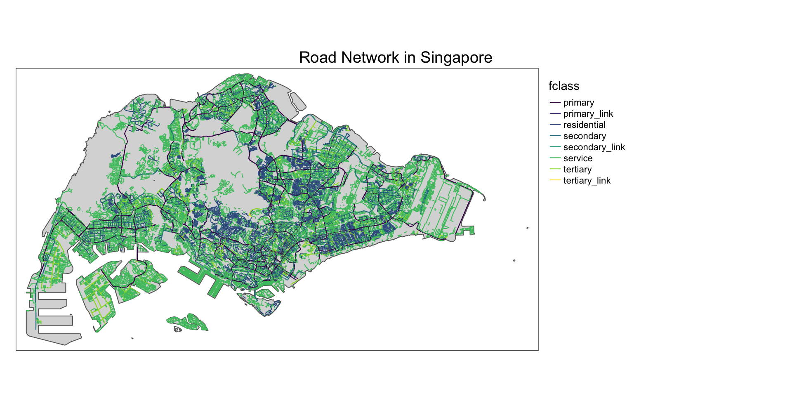
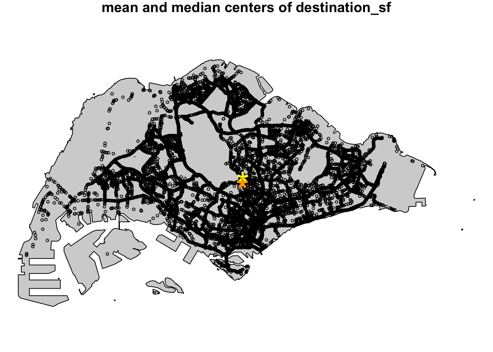
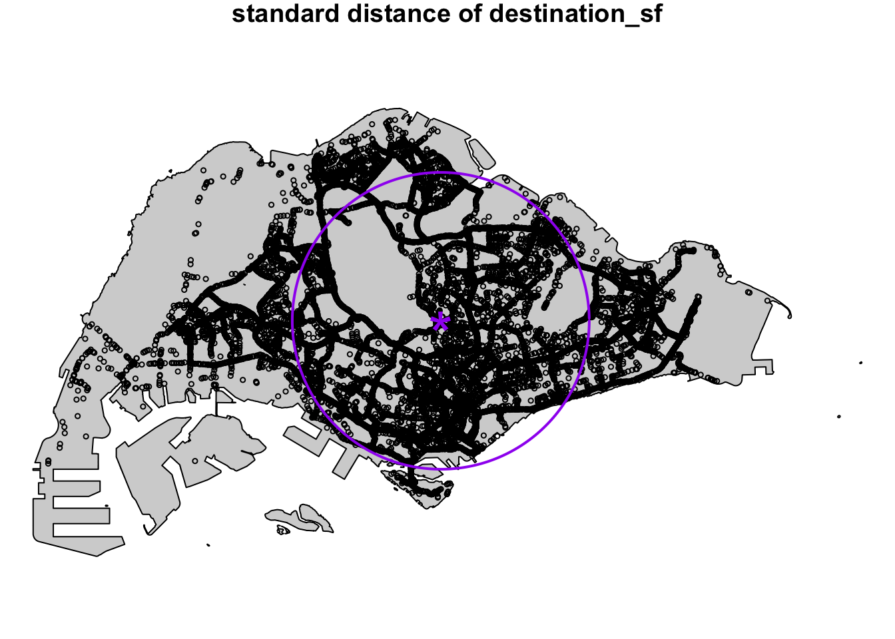
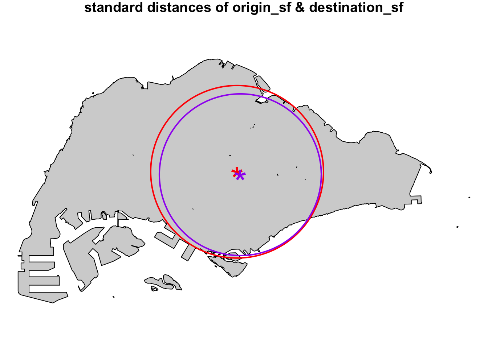
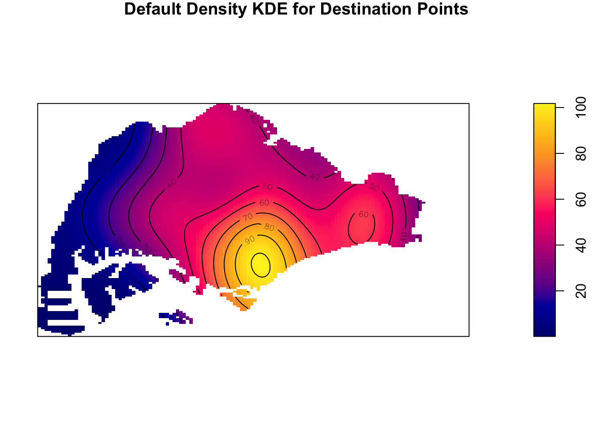

pacman::p_load(arrow,lubridate,tidyverse,tmap,sf,st,spatstat,patchwork)1.0 Introduction
Human mobility, the spatial-temporal dynamics of human movements, serves as a critical reflection of societal patterns and human behaviors. With the advancement and pervasiveness of Information and Communication Technologies (ICT) in our daily life, especially smart phone, a large volume of data related to human mobility have been collected. These data provide valuable insights into understanding how individuals and populations move within and between different geographical locations. By using appropriate GIS analysis methods, these data can turn into valuable inisghts for predicting future mobility trrends and developing more efficient and sustainable strategies for managing urban mobility.
In this study, I will apply Spatial Point Patterns Analysis methods to discover the geographical and spatio-temporal distribution of Grab hailing services locations in Singapore. In order to determine the geographical and spatio-temporal patterns of the Grab hailing services, I will develop traditional Kernel Density Estimation (KDE) and Temporal Network Kernel Density Estimation (TNKDE). KDE layers will help identify the areas with high concentration of Grab hailing services, providing insights into the demand and popularity of these services in different parts of Singapore. TNKDE, on the other hand, will allow for analysis of how the distribution of Grab hailing services changes over time, revealing temporal patterns and trends in their usage. These spatial and spatio-temporal analyses will contribute to a better understanding of the dynamics and effectiveness of Grab’s mobility services in Singapore.
2.0 Literature Review of Spatial Point Pattern Analysis
Spatial point pattern analysis is concerned with description, statistical characterization, modeling and visulisation of point patterns over space and making inference about the process that could have generated an observed pattern (Boots & Getis, 1988 ,Rey et al., 2023; Pebesma & Bivand, 2023). According to this theory, empirical spatial distribution of points in our daily life are not controlled by sampling, but a result of an underlying geographically-continuous process (Rey et al., 2023). For example, an COVID-19 cluster did not happen by chance, but due to a spatial process of close-contact infection.
When analysing real-world spatial points, it is important to analyse whether the observed spatial points are randomly distributed or patterned due to a process or interaction (Floch et al., 2018). In “complete random” distribution, points are located everywhere with the same probability and independently of each other. On the other hand, the spatial points can be clustered or dispersed due to an underlying point process. However, it is challenging to use heuristic observation and intuitive interpretation to detect whether a spatial point pattern exists (Baddeley et al., 2015; Floch et al., 2018). Hence, spatial point pattern analysis can be used to detect the spatial concentration or dispersion phenomena.

When analysing and interpreting the properties of a point pattern, these properties can be categorized into two: (a) first-order properties and (b) second-order properties (Yuan et al., 2020; Gimond, 2023). First-order properties concern with the characteristics of individual point locations and their variations of their density across space (Gimond, 2023). Under this conception, observations vary from point to point due to changes in the underlying property. Second-order properties focus on not only individual points, but also the interactions between points and their influences on one another (Gimond, 2023). Under this conception, observations vary from place to place due to interaction effects between observations. First-order properties of point patterns are mostly addressed by density-based techniques, such as quadrat analysis and kernel density estimation, whereas, distance-based techniques, such nearest neighbour index and K-functions, are often used to analyse second-order properties since they take into account the distance between point pairs (Yuan et al., 2020; Gimond, 2023).
3.0 Importing Packages
Before we start the exercise, we will need to import necessary R packages first. We will use the following packages:
arrow: for reading and writing Apache Parquet fileslubridate: for tackling with temporal data (dates and times)spatstat: A package for statistical analysis of spatial data, specifically Spatial Point Pattern Analysis. This package was provided by Baddeley, Turner and Ruback (2015) and gives a comprehensive list of functions to perform 1st- and 2nd-order spatial point patterns analysis and derive kernel density estimation (KDE) layer.rgdal: Used to import geospatial data and output as spatial class objects from sp package
raster : reads, writes, manipulates, analyses and model of gridded spatial data (i.e. raster). In this hands-on exercise, it will be used to convert image output generate by spatstat into raster format.
maptools, ggplot2, ggthemes, plotly: Packages used to plot interactive visualisations summary statistics and KDE layers
4.0 Importing Datasets into R Environment
4.1 Datasets
In this study, we will use Grab-Posisi dataset, which is a comprehensive GPS trajectory dataset for car-hailing services in Southeast Asia. Apart from the time and location of the object, GPS trajectories are also characterised by other parameters such as speed, the headed direction, the area and distance covered during its travel, and the travelled time. Thus, the trajectory patterns from users GPS data are a valuable source of information for a wide range of urban applications, such as solving transportation problems, traffic prediction, and developing reasonable urban planning.
Moreover, we will also use OpenStreetMap dataset, which is an open-sourced geospatial dataset including shapefiles of important layers including road networks, forests, building footprints and many other points of interest.
To extract the Singapore boundary, we will use Master Plan 2019 Subzone Boundary (No Sea), provided by data.gov.sg.
4.2 Importing Grab-Posisi Dataset
Each trajectory in Grab-Posisi dataset is serialised in a file in Apache Parquet format. The Singapore portion of the dataset is packaged into a total of 10 Parquet files.
Firstly, we will use read_parquet function from arrow package, which allows us to read Parquet files into R environment as a data frame (more specifically, a tibble).
df <- read_parquet('~/IS415-GAA/data/GrabPosisi/part-00000.snappy.parquet',as_data_frame = TRUE)
df1 <- read_parquet('~/IS415-GAA/data/GrabPosisi/part-00001.snappy.parquet',as_data_frame = TRUE)
df2 <- read_parquet('~/IS415-GAA/data/GrabPosisi/part-00002.snappy.parquet',as_data_frame = TRUE)
df3 <- read_parquet('~/IS415-GAA/data/GrabPosisi/part-00003.snappy.parquet',as_data_frame = TRUE)
df4 <- read_parquet('~/IS415-GAA/data/GrabPosisi/part-00004.snappy.parquet',as_data_frame = TRUE)
df5 <- read_parquet('~/IS415-GAA/data/GrabPosisi/part-00005.snappy.parquet',as_data_frame = TRUE)
df6 <- read_parquet('~/IS415-GAA/data/GrabPosisi/part-00006.snappy.parquet',as_data_frame = TRUE)
df7 <- read_parquet('~/IS415-GAA/data/GrabPosisi/part-00007.snappy.parquet',as_data_frame = TRUE)
df8 <- read_parquet('~/IS415-GAA/data/GrabPosisi/part-00008.snappy.parquet',as_data_frame = TRUE)
df9 <- read_parquet('~/IS415-GAA/data/GrabPosisi/part-00009.snappy.parquet',as_data_frame = TRUE)To consolidate all trajectory instances into a single dataframe, we’ll vertically bind all 10 imported dataframes using bind_rows() function from tidyverse package.
df_trajectories <- bind_rows(df,df1,df2,df3,df4,df5,df6,df7,df8,df9)To get a quick overview of the dataset, we’ll first check the number of trajectory instances using dim() function. Then, we’ll use head() function to quickly scan through the data columns and values
dim(df_trajectories)[1] 30329685 9head(df_trajectories)# A tibble: 6 × 9
trj_id driving_mode osname pingtimestamp rawlat rawlng speed bearing accuracy
<chr> <chr> <chr> <int> <dbl> <dbl> <dbl> <int> <dbl>
1 70014 car android 1554943236 1.34 104. 18.9 248 3.9
2 73573 car android 1555582623 1.32 104. 17.7 44 4
3 75567 car android 1555141026 1.33 104. 14.0 34 3.9
4 1410 car android 1555731693 1.26 104. 13.0 181 4
5 4354 car android 1555584497 1.28 104. 14.8 93 3.9
6 32630 car android 1555395258 1.30 104. 23.2 73 3.9From the result above, we can see that the dataset includes a total of 30329685 trajectory instances, each with a total of 9 columns as follows:
| Column Name | Data Type | Remark |
|---|---|---|
| trj_id | chr | Trajectory ID |
| driving_mode | chr | Mode of Driving |
| osname | chr | |
| pingtimestamp | int | Data Recording Timestamp |
| rawlat | num | Latitude Value (WGS-84) |
| rawlng | num | Longitude Value (WGS-84) |
| speed | num | Speed |
| bearing | int | Bearing |
| accuracy | num | Accuracy |
From the above table, it is seen that the pingtimestamp is recorded as int. We need to convert this data to proper datetime format to derive meaningful temporal insights of the data. To do so, we will use as_datetime() function from lubridate package.
df_trajectories$pingtimestamp <- as_datetime(df_trajectories$pingtimestamp)4.3 Importing OpenStreetMap road data for Malaysia, Singapore and Brunei
The gis_osm_roads_free_1 dataset, which we downloaded from OpenStreetMap, is in ESRI shapefile format. To use this data in an R-environment, we need to import it as an sf object. We can do this using the st_read() function of the sf package. This function reads the shapefile data and returns an sf object that can be used for further analysis.
osm_road_sf <- st_read(dsn = "~/IS415-GAA/data/geospatial",
layer = "gis_osm_roads_free_1") %>% st_transform(crs = 3414)4.4 Importing Singapore Master Plan Planning Subzone boundary data
The MP14_SUBZONE_WEB_PL dataset, which we downloaded from data.gov.sg, is in ESRI shapefile format. To use this data in an R-environment, we need to import it as an sf object. We can do this using the st_read() function of the sf package. This function reads the shapefile data and returns an sf object that can be used for further analysis.
mpsz_sf <- st_read(dsn = "~/IS415-GAA/data/geospatial",
layer = "MP14_SUBZONE_WEB_PL") %>% st_transform(crs = 3414)Reading layer `MP14_SUBZONE_WEB_PL' from data source
`/Users/khantminnaing/IS415-GAA/data/geospatial' using driver `ESRI Shapefile'
Simple feature collection with 323 features and 15 fields
Geometry type: MULTIPOLYGON
Dimension: XY
Bounding box: xmin: 2667.538 ymin: 15748.72 xmax: 56396.44 ymax: 50256.33
Projected CRS: SVY21
Reflection
In the code chunk above, we use %>% operator is used to pipe the output of st_read() to the st_transform() function. Since the dataset we are using is the Singapore boundary, we need to assign the standard coordinate reference system for Singapore, which is SVY21 (EPSG:3414). st_transform() function transforms the coordinate reference system of the sf object to 3414.
After importing the dataset, we will plot it to see how it looks. The plot() function is used to plot the geometry of the sf object. The st_geometry() function is used to extract the geometry of the mpsz_sf object.
plot(st_geometry(mpsz_sf))5.0 Data Wrangling
Data wrangling is the process of converting and transforming raw data into a usable form and is carried out prior to conducting any data analysis.
5.1 Extracting Trip Starting Locations and Temporal Data Values from Grab-Posisi dataset
Firstly, we will extract trip starting locations for all unqiue trajectories in the dataset and store them to a new df named origin_df. We are also interested in obtaining valuable temporal data such as the day of the week, the hour, and the date (yy-mm-dd). To do so, we will use the following functions from lubridate package, and add the newly derived values as columns to origin_df.
wday: allows us to get days component of a date-timehour: allows us to get hours component of a date-timemday: allows us to parse dates with year, month, and day components
origin_df <- df_trajectories %>%
group_by(trj_id) %>%
arrange(pingtimestamp) %>%
filter(row_number()==1) %>%
mutate(weekday = wday(pingtimestamp,
label=TRUE,
abbr=TRUE),
starting_hr = factor(hour(pingtimestamp)),
day = factor(mday(pingtimestamp)))5.2 Extracting Trip Ending Locations and Temporal Data Values from Grab-Posisi dataset
Similar to what we did in previous session, we are also interested to extract trip ending locations and associated temporal data into a new df called destination_df. We will use the same functions from previous session here.
destination_df <- df_trajectories %>%
group_by(trj_id) %>%
arrange(desc(pingtimestamp)) %>%
filter(row_number()==1) %>%
mutate(weekday = wday(pingtimestamp,
label=TRUE,
abbr=TRUE),
starting_hr = factor(hour(pingtimestamp)),
day = factor(mday(pingtimestamp)))
Reflection
arrange() function sort the timestamps in ascending order by default. Hence, this default order is applied to origin_df. However, for destination_df, the arrange(desc()) argument is used to modify the default order to descending.
5.3 Converting to sf tibble data.frame
origin_sf <- st_as_sf(origin_df,
coords = c("rawlng", "rawlat"),
crs = 4326) %>%
st_transform(crs = 3414)
destination_sf <- st_as_sf(destination_df,
coords = c("rawlng", "rawlat"),
crs = 4326) %>%
st_transform(crs = 3414)5.4 Creating a CoastalLine of Singapore
The original mpsz_sf dataset we imported include information of all URA Master Plan planning area boundaries. However, for this analysis, we only need the national-level boundary of Singapore. Hence, we will need to union all the subzone boundaries to one single polygon boundary. Also, Grab ride-hailing service is only available on the main Singapore islands. Hence, we will need to remove outer islands which Grab service is not available. In particular, we will remove the following planning subzones: NORTH-EASTERN ISLANDS, SOUTHERN GROUP, SUDONG & SEMAKAU.
We can remove these subzones using the subset() function. The subset() function is used to extract rows from a data frame that meet certain conditions.
northeasten.islands <- subset(mpsz_sf, mpsz_sf$SUBZONE_N == "NORTH-EASTERN ISLANDS")
southern.islands <- subset(mpsz_sf, mpsz_sf$SUBZONE_N == "SOUTHERN GROUP")
sudong <- subset(mpsz_sf, mpsz_sf$SUBZONE_N == "SUDONG")
semakau <- subset(mpsz_sf,mpsz_sf$SUBZONE_N == "SEMAKAU")
outerislands <- dplyr::bind_rows(list(northeasten.islands,southern.islands,sudong,semakau))
Reflection
In the code chunk above, we first created four new data frames called northeasten.islands, southern.islands, sudong, and semakau by selecting rows from mpsz_sf where the value in the SUBZONE_N column matches the corresponding value.
After that, we used bind_rows() function from the dplyr package to combine these four data frames into a single data frame called outerislands.
After importing the dataset, we will plot it to see how it looks.
plot(st_geometry(outerislands))As mentioned earlier, we only need to get national-level boundary of Singapore, without outer islands. To do so, we will need to process the mpsz_sf layer to achieve the outcome. - We will first use st_union() function from the sf package to combine the geometries of mpsz_sf and outerislands sf objects into a single geometry each. - Next, we will use st_difference() function then removes the overlapping areas between the two geometries. - Finally, we will store the non-overlapping areas into a new sf objected called sg_sf.
sg_sf <- st_difference(st_union(mpsz_sf), st_union(outerislands))To assess whether the geometry of the newly created sg_sf matches our intended outcome, we will plot it out.
plot(st_geometry(sg_sf))5.5 Extracting Road Layers within Singapore
As we have seen in Section 4.3., osm_road_sf dataset includes road networks from not only Singapore, but also Malaysia and Brunei. However, our analysis is focused on Singapore. Hence, we will need to remove unecessary data rows. To do so, we will
sg_road_sf <- st_intersection(osm_road_sf,sg_sf)Next, we will look at the classification of road networks as provided by OpenStreetMap.
unique(sg_road_sf$fclass) [1] "primary" "residential" "tertiary" "footway"
[5] "service" "secondary" "motorway" "motorway_link"
[9] "trunk" "trunk_link" "primary_link" "pedestrian"
[13] "living_street" "unclassified" "steps" "track_grade2"
[17] "track" "secondary_link" "cycleway" "path"
[21] "tertiary_link" "track_grade1" "track_grade3" "unknown"
[25] "track_grade5" "bridleway" "track_grade4" tm_shape(sg_sf) +
tm_polygons() +
tm_shape(sg_road_sf) +
tm_lines(col="fclass", palette ="viridis") +
tm_layout(main.title = "Road Network in Singapore",
main.title.position = "center",
main.title.size = 1.2,
legend.outside = TRUE,
frame = TRUE) +
tm_borders(alpha = 0.5)
5.5 Converting the Simple Features to Planar Point Pattern Object
In order to use the capabilities of spatstat packahe, a spatial dataset should be converted into an object of class planar point pattern ppp (Baddeley et al., 2015). A point pattern object contains the spatial coordinates of the points, the marks attached to the points (if any), the window in which the points were observed, and the name of the unit of length for the spatial coordinates. s. Thus, a single object of class ppp contains all the information required to perform spatial point pattern analysis.
In previous section, we have created sf objects of Grab trajectory origin and destination points. Now, we will convert them into ppp objects using as.ppp() function from spatstat package.
origin_ppp <- as.ppp(st_coordinates(origin_sf), st_bbox(origin_sf))
par(mar = c(0,0,1,0))
plot(origin_ppp)
Tip
The code chunk above converts the origin_sf object to a point pattern object of class ppp. st_coordinates() function is used to extract the coordinates of the origin_sf object and st_bbox() function is used to extract the bounding box of the origin_sf object. The resulting object origin_ppp is a point pattern object of class ppp.
destination_ppp <- as.ppp(st_coordinates(destination_sf), st_bbox(destination_sf))
par(mar = c(0,0,1,0))
plot(destination_ppp)
5.6 Handling Data Errors
Before going striaght into analysis, we will need to a quick look at the summary statistics of the newly created ppp objects. This is an important step to ensure that the data is free of errors and that a reliable analysis can be performed.
5.6.1 Data Error Handling for origin_ppp
We will use summary() function to get summary information of origin_ppp object.
summary(origin_ppp)Planar point pattern: 28000 points
Average intensity 2.473666e-05 points per square unit
Coordinates are given to 3 decimal places
i.e. rounded to the nearest multiple of 0.001 units
Window: rectangle = [3628.24, 49845.23] x [25198.14, 49689.64] units
(46220 x 24490 units)
Window area = 1131920000 square unitsWe can also check if there is any duplicated points in origin_ppp object using any(duplicated() function.
any(duplicated(origin_ppp))[1] FALSEThe code output is FALSE, which means there are no duplication of point coordaintes in the origin_ppp object.
Why do we need to check duplication?
When analyzing spatial point processes, it is important to avoid duplication of points. This is because statistical methodology for spatial point processes is based largely on the assumption that processes are simple, i.e., that points of the process can never be coincident. When the data have coincident points, some statistical procedures designed for simple point processes will be severely affected (Baddeley et al., 2015).
5.6.2 Data Error Handling for destination_ppp
We will use summary() function to get summary information of destination_ppp object.
summary(destination_ppp)Planar point pattern: 28000 points
Average intensity 2.493661e-05 points per square unit
Coordinates are given to 3 decimal places
i.e. rounded to the nearest multiple of 0.001 units
Window: rectangle = [3637.21, 49870.63] x [25221.3, 49507.79] units
(46230 x 24290 units)
Window area = 1122850000 square unitsWe can also check if there is any duplicated points in destination_ppp object using any(duplicated() function.
any(duplicated(destination_ppp))[1] FALSEThe code output is FALSE, which means there are no duplication of point coordinates in the destination_ppp object.
5.7 Creating Observation Windows
Many data types in spatstat require us to specify the region of space inside which the data were observed. This is the observation window and it is represented by an object of class owin. In this analysis, our study area is Singapore, hence we will use Singapore boundary as the observation window for spatial point pattern analysis.
In Section 5.4, we have already created the sg_sf object, which represents the Singapore boundary (without outer islands). To convert this sf object to owin object, we will use as.owin() function from spatstat package.
sg_owin <- as.owin(sg_sf)
plot.owin(sg_owin)
We will use summary() function to get summary information of sg_owin object.
summary(sg_owin)Window: polygonal boundary
44 separate polygons (24 holes)
vertices area relative.area
polygon 1 14651 6.97996e+08 9.92e-01
polygon 2 (hole) 3 -2.21090e+00 -3.14e-09
polygon 3 285 1.61128e+06 2.29e-03
polygon 4 (hole) 3 -2.05920e-03 -2.93e-12
polygon 5 (hole) 3 -8.83647e-03 -1.26e-11
polygon 6 27 1.50315e+04 2.14e-05
polygon 7 (hole) 36 -4.01660e+04 -5.71e-05
polygon 8 (hole) 317 -5.11280e+04 -7.27e-05
polygon 9 (hole) 3 -2.89050e-05 -4.11e-14
polygon 10 30 2.80002e+04 3.98e-05
polygon 11 (hole) 3 -2.83151e-01 -4.03e-10
polygon 12 71 8.18750e+03 1.16e-05
polygon 13 (hole) 3 -1.68316e-04 -2.39e-13
polygon 14 (hole) 36 -7.79904e+03 -1.11e-05
polygon 15 (hole) 4 -2.05611e-02 -2.92e-11
polygon 16 (hole) 3 -2.18000e-06 -3.10e-15
polygon 17 (hole) 3 -3.65501e-03 -5.20e-12
polygon 18 (hole) 3 -4.95057e-02 -7.04e-11
polygon 19 (hole) 3 -3.99521e-02 -5.68e-11
polygon 20 (hole) 3 -6.62377e-01 -9.42e-10
polygon 21 (hole) 3 -2.09065e-03 -2.97e-12
polygon 22 91 1.49663e+04 2.13e-05
polygon 23 (hole) 26 -1.25665e+03 -1.79e-06
polygon 24 (hole) 349 -1.21433e+03 -1.73e-06
polygon 25 (hole) 20 -4.39069e+00 -6.24e-09
polygon 26 (hole) 48 -1.38338e+02 -1.97e-07
polygon 27 (hole) 28 -1.99862e+01 -2.84e-08
polygon 28 40 1.38607e+04 1.97e-05
polygon 29 (hole) 40 -6.00381e+03 -8.54e-06
polygon 30 (hole) 7 -1.40545e-01 -2.00e-10
polygon 31 (hole) 12 -8.36709e+01 -1.19e-07
polygon 32 45 2.51218e+03 3.57e-06
polygon 33 142 3.22293e+03 4.58e-06
polygon 34 148 3.10395e+03 4.41e-06
polygon 35 75 1.73526e+04 2.47e-05
polygon 36 83 5.28920e+03 7.52e-06
polygon 37 106 3.04104e+03 4.32e-06
polygon 38 266 1.50631e+06 2.14e-03
polygon 39 71 5.63061e+03 8.01e-06
polygon 40 10 1.99717e+02 2.84e-07
polygon 41 478 2.06120e+06 2.93e-03
polygon 42 65 8.42861e+04 1.20e-04
polygon 43 47 3.82087e+04 5.43e-05
polygon 44 22 6.74651e+03 9.59e-06
enclosing rectangle: [2667.54, 55941.94] x [21494.3, 50256.33] units
(53270 x 28760 units)
Window area = 703317000 square units
Fraction of frame area: 0.4595.8 Combining ppp objects and owin object
In section 5.5, we have created two ppp objects - origin_ppp and destination_ppp, each representing the spatial points of Grab trajectory origin and destination. In section 5.7, we have created a owin object called sg_owin, which represent the observation window of our analysis.
The observation window sg_owin and the point pattern origin_ppp or destination_ppp can be combined, so that the custom window replaces the default ractangular extent (as seen in section 5.5).
origin_ppp_sg = origin_ppp[sg_owin]
destination_ppp_sg = destination_ppp[sg_owin]
par(mar = c(0,0,1,0))
plot(origin_ppp_sg)plot(destination_ppp_sg)
We will use summary() function to get summary information of the newly created origin_ppp_sg object and destination_ppp_sg object.
summary(origin_ppp_sg)Planar point pattern: 28000 points
Average intensity 3.981136e-05 points per square unit
Coordinates are given to 3 decimal places
i.e. rounded to the nearest multiple of 0.001 units
Window: polygonal boundary
44 separate polygons (24 holes)
vertices area relative.area
polygon 1 14651 6.97996e+08 9.92e-01
polygon 2 (hole) 3 -2.21090e+00 -3.14e-09
polygon 3 285 1.61128e+06 2.29e-03
polygon 4 (hole) 3 -2.05920e-03 -2.93e-12
polygon 5 (hole) 3 -8.83647e-03 -1.26e-11
polygon 6 27 1.50315e+04 2.14e-05
polygon 7 (hole) 36 -4.01660e+04 -5.71e-05
polygon 8 (hole) 317 -5.11280e+04 -7.27e-05
polygon 9 (hole) 3 -2.89050e-05 -4.11e-14
polygon 10 30 2.80002e+04 3.98e-05
polygon 11 (hole) 3 -2.83151e-01 -4.03e-10
polygon 12 71 8.18750e+03 1.16e-05
polygon 13 (hole) 3 -1.68316e-04 -2.39e-13
polygon 14 (hole) 36 -7.79904e+03 -1.11e-05
polygon 15 (hole) 4 -2.05611e-02 -2.92e-11
polygon 16 (hole) 3 -2.18000e-06 -3.10e-15
polygon 17 (hole) 3 -3.65501e-03 -5.20e-12
polygon 18 (hole) 3 -4.95057e-02 -7.04e-11
polygon 19 (hole) 3 -3.99521e-02 -5.68e-11
polygon 20 (hole) 3 -6.62377e-01 -9.42e-10
polygon 21 (hole) 3 -2.09065e-03 -2.97e-12
polygon 22 91 1.49663e+04 2.13e-05
polygon 23 (hole) 26 -1.25665e+03 -1.79e-06
polygon 24 (hole) 349 -1.21433e+03 -1.73e-06
polygon 25 (hole) 20 -4.39069e+00 -6.24e-09
polygon 26 (hole) 48 -1.38338e+02 -1.97e-07
polygon 27 (hole) 28 -1.99862e+01 -2.84e-08
polygon 28 40 1.38607e+04 1.97e-05
polygon 29 (hole) 40 -6.00381e+03 -8.54e-06
polygon 30 (hole) 7 -1.40545e-01 -2.00e-10
polygon 31 (hole) 12 -8.36709e+01 -1.19e-07
polygon 32 45 2.51218e+03 3.57e-06
polygon 33 142 3.22293e+03 4.58e-06
polygon 34 148 3.10395e+03 4.41e-06
polygon 35 75 1.73526e+04 2.47e-05
polygon 36 83 5.28920e+03 7.52e-06
polygon 37 106 3.04104e+03 4.32e-06
polygon 38 266 1.50631e+06 2.14e-03
polygon 39 71 5.63061e+03 8.01e-06
polygon 40 10 1.99717e+02 2.84e-07
polygon 41 478 2.06120e+06 2.93e-03
polygon 42 65 8.42861e+04 1.20e-04
polygon 43 47 3.82087e+04 5.43e-05
polygon 44 22 6.74651e+03 9.59e-06
enclosing rectangle: [2667.54, 55941.94] x [21494.3, 50256.33] units
(53270 x 28760 units)
Window area = 703317000 square units
Fraction of frame area: 0.459summary(destination_ppp_sg)Planar point pattern: 27997 points
Average intensity 3.980709e-05 points per square unit
Coordinates are given to 3 decimal places
i.e. rounded to the nearest multiple of 0.001 units
Window: polygonal boundary
44 separate polygons (24 holes)
vertices area relative.area
polygon 1 14651 6.97996e+08 9.92e-01
polygon 2 (hole) 3 -2.21090e+00 -3.14e-09
polygon 3 285 1.61128e+06 2.29e-03
polygon 4 (hole) 3 -2.05920e-03 -2.93e-12
polygon 5 (hole) 3 -8.83647e-03 -1.26e-11
polygon 6 27 1.50315e+04 2.14e-05
polygon 7 (hole) 36 -4.01660e+04 -5.71e-05
polygon 8 (hole) 317 -5.11280e+04 -7.27e-05
polygon 9 (hole) 3 -2.89050e-05 -4.11e-14
polygon 10 30 2.80002e+04 3.98e-05
polygon 11 (hole) 3 -2.83151e-01 -4.03e-10
polygon 12 71 8.18750e+03 1.16e-05
polygon 13 (hole) 3 -1.68316e-04 -2.39e-13
polygon 14 (hole) 36 -7.79904e+03 -1.11e-05
polygon 15 (hole) 4 -2.05611e-02 -2.92e-11
polygon 16 (hole) 3 -2.18000e-06 -3.10e-15
polygon 17 (hole) 3 -3.65501e-03 -5.20e-12
polygon 18 (hole) 3 -4.95057e-02 -7.04e-11
polygon 19 (hole) 3 -3.99521e-02 -5.68e-11
polygon 20 (hole) 3 -6.62377e-01 -9.42e-10
polygon 21 (hole) 3 -2.09065e-03 -2.97e-12
polygon 22 91 1.49663e+04 2.13e-05
polygon 23 (hole) 26 -1.25665e+03 -1.79e-06
polygon 24 (hole) 349 -1.21433e+03 -1.73e-06
polygon 25 (hole) 20 -4.39069e+00 -6.24e-09
polygon 26 (hole) 48 -1.38338e+02 -1.97e-07
polygon 27 (hole) 28 -1.99862e+01 -2.84e-08
polygon 28 40 1.38607e+04 1.97e-05
polygon 29 (hole) 40 -6.00381e+03 -8.54e-06
polygon 30 (hole) 7 -1.40545e-01 -2.00e-10
polygon 31 (hole) 12 -8.36709e+01 -1.19e-07
polygon 32 45 2.51218e+03 3.57e-06
polygon 33 142 3.22293e+03 4.58e-06
polygon 34 148 3.10395e+03 4.41e-06
polygon 35 75 1.73526e+04 2.47e-05
polygon 36 83 5.28920e+03 7.52e-06
polygon 37 106 3.04104e+03 4.32e-06
polygon 38 266 1.50631e+06 2.14e-03
polygon 39 71 5.63061e+03 8.01e-06
polygon 40 10 1.99717e+02 2.84e-07
polygon 41 478 2.06120e+06 2.93e-03
polygon 42 65 8.42861e+04 1.20e-04
polygon 43 47 3.82087e+04 5.43e-05
polygon 44 22 6.74651e+03 9.59e-06
enclosing rectangle: [2667.54, 55941.94] x [21494.3, 50256.33] units
(53270 x 28760 units)
Window area = 703317000 square units
Fraction of frame area: 0.4596.0 Exploratory Spatial Data Analysis
6.1 Visualising Frequency Distribution
origin_day <- ggplot(data=origin_df,
aes(x=weekday)) +
geom_bar()
destination_day <- ggplot(data=destination_sf,
aes(x=weekday)) +
geom_bar()
origin_day + destination_day6.2 Creating Point Symbol Maps
tmap_mode("view")
tm_shape(origin_sf) +
tm_dots(alpha=0.4,
size=0.05)
tm_shape(destination_sf) +
tm_dots(alpha=0.4,
size=0.05)6.2 Measuring Central Tendency
Descriptive statistics are used in point pattern analysis to summarise a point pattern’s basic properties, such as its central tendency and dispersion. The mean centre and the median centre are two often employed metrics for central tendency (Gimond, 2019).
6.2.1 Mean Center
Mean center is the arithmetic average of the (x, y) coordinates of all point in the study area. Similar to mean in statistical analysis, mean center is influenced to a greater degree by the outliers. (Yuan et al.,2020)
origin_xy <- st_coordinates(origin_sf)
origin_mc <- apply(origin_xy, 2, mean)
destination_xy <- st_coordinates(destination_sf)
destination_mc <- apply(destination_xy, 2, mean)
origin_mc X Y
28490.57 36939.04 destination_mc X Y
28870.96 36590.49 The results show that the origin and destination mean centres are, respectively, (28490.57, 36939.04) and (28870.96, 36590.49). The two mean centres appear to be situated in close proximity to one another.
6.2.2 Median Center
Median center is the location that minimizes the sum of distances required to travel to all points within an observation window. It can be calculated using an iterative procedure first presented by Kulin and Kuenne (1962). The procedure begins at a predetermined point, such as the median center, as the initial point. Then, the algorithm updates the median center’s new coordinates (x’, y’) continually until the optimal value is reached. The median center, as opposed to the mean center, offers a more reliable indicator of central tendency as it is unaffected by outliers (Yuan et al., 2020).
origin_medc <- apply(origin_xy, 2, median)
destination_medc <- apply(destination_xy, 2, median)
origin_medc X Y
28553.17 36179.05 destination_medc X Y
28855.04 35883.86 Based on the results, the median centres of origin and destination are, respectively, (28553.17, 36179.05) and (28855.04, 35883.86). The two median centres appear to be situated in close proximity to one another.
Moreover, mean centers and median centers for each origin and destination points are similar. This may imply that the distribution of the data is relatively balanced and there is not a significant difference in the spatial patterns between the origin and destination points. Additionally, this indicates that both the mean center and median center are effective measures for analyzing the central tendency of the data in this context.
6.2.3 Plotting Mean and Median Centers
We can try to plot both results obtained from previous section on the same plane for better comparison of the mean center and median center.
par(mar = c(0,0,1,0))
plot(sg_sf, col='light grey', main="mean and median centers of origin_sf")
points(origin_xy, cex=.5)
points(cbind(origin_mc[1], origin_mc[2]), pch='*', col='red', cex=3)
points(cbind(origin_medc[1], origin_medc[2]), pch='*', col='purple', cex=3)
par(mar = c(0,0,1,0))
plot(sg_sf, col='light grey', main="mean and median centers of destination_sf")
points(destination_xy, cex=.5)
points(cbind(destination_mc[1], destination_mc[2]), pch='*', col='yellow', cex=3)
points(cbind(destination_medc[1], destination_medc[2]), pch='*', col='orange', cex=3)
6.2 Measuring Dispersion
6.2.1 Standard Distance
Standard distances are defined similarly to standard deviations. This indicator measures how dispersed a group of points is around its mean center (Gimond, 2023).
origin_sd <- sqrt(sum((origin_xy[,1] - origin_mc[1])^2 + (origin_xy[,2] - origin_mc[2])^2) / nrow(origin_xy))
destination_sd <- sqrt(sum((destination_xy[,1] - destination_mc[1])^2 + (destination_xy[,2] - destination_mc[2])^2) / nrow(destination_xy))
origin_sd[1] 10187.88destination_sd[1] 9545.69From the results, the origin and destination standard distances are 10187.88 and 9545.69, respectively. Hence, it appears that origin points are more dispersed than the origin points.
Reflection
However, it would be challenging to discern why the origin points are more dispersed without further analysis. Further analysis would be needed to determine the factors contributing to the increased dispersion of destination points. Since it is out of scope for this exercise, we will not explore any further.
6.2.3 Plotting Standard Distances
In this section, we will create bearing circles of origin and destination points using the standard distance values we have calculated earlier. This can provide visual representation of their dispersion and make intuitive comparison between them.
par(mar = c(0,0,1,0))
plot(sg_sf, col='light grey', main="standard distance of origin_sf")
points(origin_xy, cex=.5)
points(cbind(origin_mc[1], origin_mc[2]), pch='*', col='red', cex=3)
bearing <- 1:360 * pi/180
cx <- origin_mc[1] + origin_sd * cos(bearing)
cy <- origin_mc[2] + origin_sd * sin(bearing)
circle <- cbind(cx, cy)
lines(circle, col='red', lwd=2)
par(mar = c(0,0,1,0))
plot(sg_sf, col='light grey',main="standard distance of destination_sf")
points(destination_xy, cex=.5)
points(cbind(destination_mc[1], destination_mc[2]), pch='*', col='purple', cex=3)
bearing <- 1:360 * pi/180
cx <- destination_mc[1] + destination_sd * cos(bearing)
cy <- destination_mc[2] + destination_sd * sin(bearing)
circle <- cbind(cx, cy)
lines(circle, col='purple', lwd=2)
A better comparison of the standard distances between origin and destination points can also be achieved by trying to plot both results on the same plane.
par(mar = c(0,0,1,0))
plot(sg_sf, col='light grey',main="standard distances of origin_sf & destination_sf")
points(cbind(origin_mc[1], origin_mc[2]), pch='*', col='red', cex=3)
points(cbind(destination_mc[1], destination_mc[2]), pch='*', col='purple', cex=3)
bearing <- 1:360 * pi/180
origin_cx <- origin_mc[1] + origin_sd * cos(bearing)
origin_cy <- origin_mc[2] + origin_sd * sin(bearing)
destination_cx <- destination_mc[1] + destination_sd * cos(bearing)
destination_cy <- destination_mc[2] + destination_sd * sin(bearing)
origin_circle <- cbind(origin_cx, origin_cy)
destination_circle <- cbind(destination_cx, destination_cy)
lines(origin_circle, col='red', lwd=2)
lines(destination_circle, col='purple', lwd=2)
7.0 First-Order Spatial Point Patterns Analysis
After data wrangling is complete, we will start to perform first-order spatial point pattern analysis using functions from spatstat package. As we have discussed in Section 2.0., First-order properties concern the characteristics of individual point locations and their variations of their density across space and are mostly addressed by density-based techniques, such as quadrant analysis and kernel density estimation.
Investigation of the intensity of a point pattern is one of the first and most important steps in point pattern analysis (Baddeley et al., 2015). If the point process has an intensity function λ(u), this function can be estimated non-parametrically by kernel estimation (Baddeley et al., 2015). Kernel estimation allows for smoothing of the probability density estimation of a random variable (in this analysis a point event) based on kernels as weights.
7.1 Kernel Density Estimation
Kernel Destiny Estimation (KDE) generates a surface (raster) representing the estimated distribution of point events over the observation window. Each cell in the KDE layer carries a value representing the estimated density of that location (Wilkin, 2020). Hence, this approach is also known as local density approach.
To build the KDE layer, a localised density is calculated for multiple small subsets of the observation window. However, these subsets overlap throughout each iteration, resulting in a moving window defined by a kernel (Wilkin, 2020; Gimond, 2023).
Kernel estimation is implemented in spatstat by the function density.ppp(), a method for the generic command density.
par(mar = c(0,1,1,1))
den <- density(origin_ppp_sg)
plot(den,main = "default density")
contour(den, add=TRUE)
However, the KDE given by default argument may not be what we aim to achieve. In this regards, we can specify smoothing bandwidth through the argument sigma or kernel function through the argument kernel.
7.2 Bandwidth Selection
The kernel bandwidth sigma controls the degree of smoothing. In general, a small value of sigma produces an irregular intensity surface, while a large value of sigma appears to oversmooth the intensity.

7.2.1 Fixed Bandwidth
density() function of spatstat allows us to compute a kernel density for a given set of point events.
bw.diggle()(Cross Validated)bw.CvL()(Cronie and van Lieshout’s Criterion)bw.scott()(Scott’s Rule)bw.ppl()(Likelihood Cross Validation)can also be used.
bw_diggle <- bw.diggle(origin_ppp_sg)
bw_diggle sigma
8.300264 bw_CvL <- bw.CvL(origin_ppp_sg)
bw_CvL sigma
3147.562 bw_scott <- bw.scott(origin_ppp_sg)
bw_scott sigma.x sigma.y
1592.6707 938.9324 bw_ppl <- bw.ppl(origin_ppp_sg)
bw_ppl sigma
123.8744 The commands used for generating bandwidth return a numerical value, the optimised bandwidth, which also belongs to the special class bw.optim. The plot method for this class shows the objective function for the optimisation that leads to the result.
par(mfrow = c(1,2))
plot(bw_diggle, xlim=c(0,40), ylim=c(-70,200))
plot(bw_CvL)
par(mfrow = c(1,2))
plot(bw_scott)
plot(bw_ppl, xlim=c(-1000,6000), ylim=c(-320000,-260000))
7.2.2 Adaptive Bandwidth
A fixed smoothing bandwidth is unsatisfactory if the true intensity varies greatly across the spatial domain, because it is likely to cause over-smoothing in the high-intensity areas and under-smoothing in the low intensity areas (Baddeley et al., 2015)
The fixed bandwidth method is very sensitive to highly skewed distribution of spatial point patterns over geographical units.
kde_origin_adaptive <- adaptive.density(origin_ppp_sg, method = "kernel")par(mar = c(0,1,1,1))
plot(kde_origin_adaptive,main = "adapative density")
7.4 Rescaling KDE Values
origin_ppp_sg.km <- rescale(origin_ppp_sg, 1000, "km")
destination_ppp_sg.km <- rescale(destination_ppp_sg, 1000, "km")
8.0 Network Constrained Kernel Density Estimation (NKDE)
Many real world point event are not randomly distributed. Their distribution, on the other hand, are constrained by network such as roads, rivers, and fault lines just to name a few of them.
pacman::p_load(dodgr)
sg_network <- weight_streetnet(dodgr_streetnet("singapore"))9.0 Temporal Network Kernel Density Estimation (TNKDE)
References
Baddeley, A., Rubak, E., & Turner, R. (2015). Spatial Point Patterns: Methodology and Applications with R (1st ed.). Chapman and Hall/CRC. https://doi.org/10.1201/b19708.
Boots, B.N., & Getis, A. (1988). Point Pattern Analysis. Reprint. Edited by G.I. Thrall. WVU Research Repository.
Floch, J.-M., Marcon, E., Puech, F. (n.d.). Spatial distribution of points. In M.-P. de Bellefon (Ed.), Handbook of Spatial Analysis : Theory and Application with R (pp. 72–111). Insee-Eurostat.
Gimond (2023). Chapter 11 Point Pattern Analysis. Retrieved from https://mgimond.github.io/Spatial/index.html.
Pebesma, E.; Bivand, R. (2023). Spatial Data Science: With Applications in R (1st ed.). Chapman and Hall/CRC. https://doi.org/10.1201/9780429459016.
Rey, S.J., Arribas-Bel, D., Wolf, L.J. (2023). Point Pattern Analysis. In: Geographic Data Science with python. CRC Press.
Wilkin, J. (2020). Geocomputation 2020-2021 Work Book. University College London. Retrieved from https://jo-wilkin.github.io/GEOG0030/coursebook/analysing-spatial-patterns-iii-point-pattern-analysis.html.
Yuan, Y., Qiang, Y., Bin Asad, K., and Chow, T. E. (2020). Point Pattern Analysis. In J.P. Wilson (Ed.), The Geographic Information Science & Technology Body of Knowledge (1st Quarter 2020 Edition). DOI: 10.22224/gistbok/2020.1.13.
Kam, T. S. (2022). R for Geospatial Data Science and Analytics. Retrieved from https://r4gdsa.netlify.app/